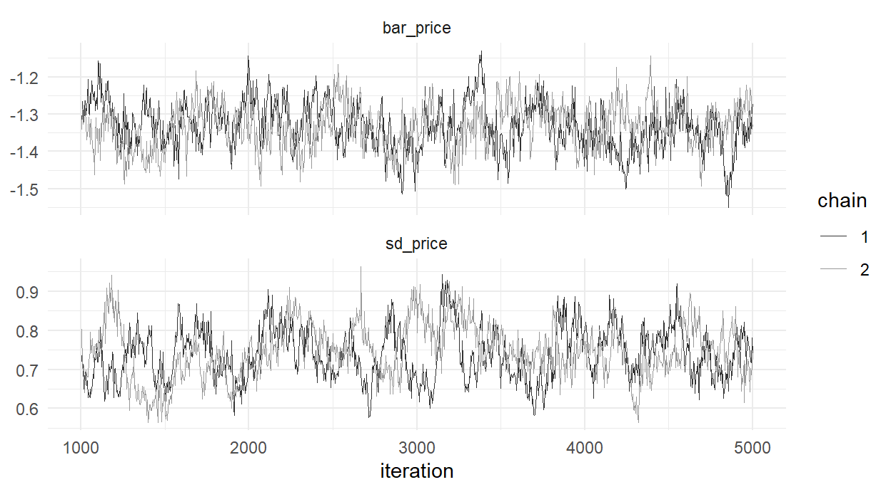
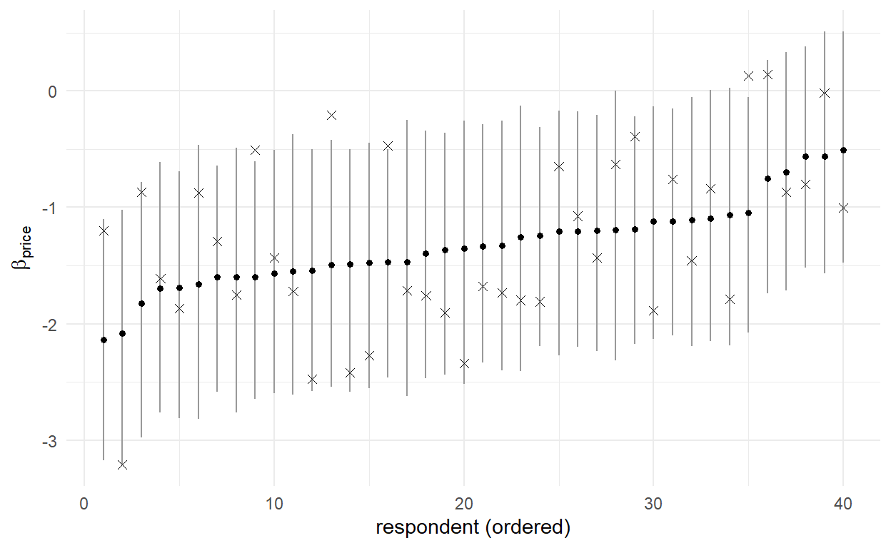

study <- readRDS("../data/mixed_study.rds")
d <- study$data
X <- model.matrix(~ brand + ram + screen + price, data = d)[, -1]
y <- d$choice
task_id <- cumsum(!duplicated(d[, c("id", "task")]))
id <- d$id
n_id <- max(id); K <- ncol(X)
## per-person MNL log-likelihood, given an N x K matrix of betas
## (the @sec-mnl-mle kernel + one rowsum by person; cf. @sec-mixed-msl)
persll <- function(B, y, X, task_id, id, id_of_task) {
V <- rowSums(X * B[id, ])
Vmax <- ave(V, task_id, FUN = max)
eV <- exp(V - Vmax)
logP <- V - Vmax - log(rowsum(eV, task_id)[task_id])
as.vector(rowsum(logP[y == 1], id_of_task))
}
## inverse-Wishart via the Bartlett decomposition
rinvwishart <- function(nu, S) {
K <- nrow(S); L <- t(chol(solve(S)))
A <- matrix(0, K, K)
diag(A) <- sqrt(rchisq(K, nu - (1:K) + 1))
A[lower.tri(A)] <- rnorm(K*(K-1)/2)
solve(L %*% A %*% t(A) %*% t(L))
}17 The Hierarchical Bayesian MNL
This is the destination chapter. The hierarchical Bayesian multinomial logit — HB-MNL to the industry that runs it thousands of times a day — is the model this book has been assembling since page one: MNL choice behavior (Chapter 7), person-specific coefficients (Chapter 11, Chapter 13), a population distribution binding them (Chapter 16), and a posterior explored by MCMC (Chapter 15). Every block of its sampler is code you have already written and tested; this chapter’s work is assembly, and then the payoff that Chapter 14 promised: exact person-level inference, with the shrinkage negotiated by the model, at computational cost that falls where MSL’s rose.
We estimate it on the same simulated dataset as Chapter 13 and Chapter 14 — one dataset, three estimators, honest comparison.
17.1 The Model
Three layers, written once in full:
\[ \begin{aligned} \text{choices:} \quad & y_{nt} \sim \text{MNL}\left( \mathbf{x}_{nt1}'\boldsymbol{\beta}_n, \ldots, \mathbf{x}_{ntJ}'\boldsymbol{\beta}_n \right) \\ \text{people:} \quad & \boldsymbol{\beta}_n \sim N\left( \bar{\boldsymbol{\beta}}, \Sigma \right) \\ \text{priors:} \quad & \bar{\boldsymbol{\beta}} \sim N\left( \mathbf{0}, 100 \, I \right), \qquad \Sigma \sim IW\left( \nu_0, V_0 \right) \end{aligned} \tag{17.1}\]
The first two layers are the mixed MNL of Equation 13.1 — identical model of behavior and heterogeneity. The third layer is what makes it Bayesian: the population parameters themselves get (weakly informative) priors, standard choices being \(\nu_0 = K + 3\) degrees of freedom and scale \(V_0 = \nu_0 I\) for the inverse-Wishart [Rossi, Allenby, and McCulloch (2005) — and mark that \(V_0\); it returns under scrutiny in the practical notes]. Two specification notes. We let all six coefficients be random with a full covariance \(\Sigma\) — the specification that cost MSL its 27-parameter nightmare is the default here, because (as the sampler will show) the hierarchy prices covariance matrices in draws, not in optimization dimensions; it is also deliberately more general than the truth (which has three random coefficients, uncorrelated), letting us watch how an honest model handles generality it doesn’t need. And unlike Chapter 13 there is no draw count \(R\), no Halton bases, no simulated integral anywhere: the \(\boldsymbol{\beta}_n\) are not integrated out but sampled, which is the whole trick.
17.2 The Sampler
The joint posterior over everything unknown — \(p(\boldsymbol{\beta}_{1:N}, \bar{\boldsymbol{\beta}}, \Sigma \mid \text{data})\), a \((500 \times 6 + 6 + 21)\)-dimensional object — is intractable whole but factors beautifully into Chapter 16 blocks:
Block 1: each \(\boldsymbol{\beta}_n\). Given \(\bar{\boldsymbol{\beta}}\) and \(\Sigma\), person \(n\)’s conditional posterior is (their MNL likelihood over \(T=8\) tasks) \(\times\) (their \(N(\bar{\boldsymbol{\beta}}, \Sigma)\) population prior) — exactly Equation 14.1, now sampled rather than summarized. The MNL kernel blocks conjugacy (Chapter 16’s closing diagnosis), so this block takes a random-walk Metropolis step: propose \(\boldsymbol{\beta}_n' = \boldsymbol{\beta}_n + \tau L\mathbf{u}\) — with \(\mathbf{u} \sim N(\mathbf{0}, I_K)\) a fresh standard-normal vector — and accept by the log ratio. Two refinements from the trade (Train 2001; Rossi, Allenby, and McCulloch 2005): the proposal is shaped by the current population covariance (\(L\) the lower-triangular Cholesky factor, \(LL' = \Sigma\); in R, t(chol(Sig)), since chol() returns the upper factor — steps stretched along directions the population actually varies), and the step size \(\tau\) — Chapter 15’s one knob, named step in the code — adapts during burn-in toward a ~30% acceptance rate, then freezes.1
Explicitly, person \(n\)’s move is accepted with probability \[\alpha_n = \min\left(1, \; \frac{ \left[\prod_{t} P(y_{nt} \mid \boldsymbol{\beta}_n')\right] \phi(\boldsymbol{\beta}_n' \mid \bar{\boldsymbol{\beta}}, \Sigma) }{ \left[\prod_{t} P(y_{nt} \mid \boldsymbol{\beta}_n)\right] \phi(\boldsymbol{\beta}_n \mid \bar{\boldsymbol{\beta}}, \Sigma) } \right)\] — Chapter 15’s Equation 15.3 with the population density \(\phi(\cdot \mid \bar{\boldsymbol{\beta}}, \Sigma)\) playing the prior’s role.
Block 2: \(\bar{\boldsymbol{\beta}}\). Given the current \(\boldsymbol{\beta}_n\)’s and \(\Sigma\), this is the Equation 16.2 update with the \(\boldsymbol{\beta}_n\)’s as “data” — a conjugate multivariate normal draw. Literally gibbs_hier’s middle block from Chapter 16. With the prior parameterized by its precision \(A_0\) — so \(N(\mathbf{0}, A_0^{-1}I)\) with \(A_0 = 0.01\) is exactly Equation 17.1’s \(N(\mathbf{0}, 100I)\); precision is how the prior enters the update, and the hierarchical literature’s convention (and bayesm’s) is to pass it directly — precisions add exactly as in Equation 16.2: \[\bar{\boldsymbol{\beta}} \mid \boldsymbol{\beta}_{1:N}, \Sigma \;\sim\; N\!\Big( \big(N\Sigma^{-1} + A_0 I\big)^{-1} \Sigma^{-1} \textstyle\sum_n \boldsymbol{\beta}_n, \;\; \big(N\Sigma^{-1} + A_0 I\big)^{-1} \Big)\]
Block 3: \(\Sigma\). Given \(\boldsymbol{\beta}_n\)’s and \(\bar{\boldsymbol{\beta}}\): inverse-Wishart draw from the accumulated deviations — the matrix version of Chapter 16’s variance update. Sampling an IW is one small function via the Bartlett decomposition (build a Wishart from chi-square and normal draws — a construction in the spirit of Chapter 2 — and invert). \[\Sigma \mid \boldsymbol{\beta}_{1:N}, \bar{\boldsymbol{\beta}} \;\sim\; IW\!\Big( \nu_0 + N, \;\; V_0 + \textstyle\sum_n (\boldsymbol{\beta}_n - \bar{\boldsymbol{\beta}})(\boldsymbol{\beta}_n - \bar{\boldsymbol{\beta}})' \Big)\] — prior degrees of freedom plus data observations, prior scale plus data scatter: Chapter 16’s inverse-gamma grammar, in matrix dress.
Metropolis-within-Gibbs, exactly as Chapter 16 forecast: two exact draws and one tuned step per cycle.
17.3 Coding It
The only new machinery relative to Chapter 8’s kernel is persll()’s last line: logP[y == 1] has one entry per task (the chosen alternative’s log probability), and id_of_task labels each task with its owner, so rowsum() adds each person’s eight task log-probabilities into the length-\(N\) vector the Metropolis step consumes.
hb_mnl <- function(y, X, task_id, id, S_iter, burn,
nu0 = ncol(X) + 3, V0 = diag(ncol(X)) * (ncol(X) + 3),
A0 = 0.01, step0 = 0.1, thin_ind = 10) {
K <- ncol(X); n_id <- max(id)
id_of_task <- id[!duplicated(task_id)]
B <- matrix(0, n_id, K) # person betas
bar <- rep(0, K); Sig <- diag(K)
step <- step0
ll_cur <- persll(B, y, X, task_id, id, id_of_task)
out <- list(bar = matrix(NA_real_, S_iter, K),
sd = matrix(NA_real_, S_iter, K),
acc = numeric(S_iter),
B_draws = array(NA_real_, c((S_iter - burn) %/% thin_ind, n_id, K)))
kk <- 0
for (s in 1:S_iter) {
## -- block 1: all beta_n at once, RW Metropolis --
L <- t(chol(Sig))
prop <- B + step * (matrix(rnorm(n_id*K), n_id, K) %*% t(L))
ll_prop <- persll(prop, y, X, task_id, id, id_of_task)
Q_cur <- forwardsolve(L, t(B - rep(bar, each = n_id)))
Q_prop <- forwardsolve(L, t(prop - rep(bar, each = n_id)))
lpri_cur <- -0.5 * colSums(Q_cur^2) # log N(bar, Sig), up to const
lpri_prop <- -0.5 * colSums(Q_prop^2)
accept <- log(runif(n_id)) < (ll_prop + lpri_prop - ll_cur - lpri_cur)
B[accept, ] <- prop[accept, ]
ll_cur[accept] <- ll_prop[accept]
if (s <= burn) step <- step * ifelse(mean(accept) > 0.30, 1.05, 0.95)
## -- block 2: bar | B, Sig (conjugate normal; prior N(0, (1/A0) I)) --
Sinv <- solve(Sig)
Vb <- solve(n_id * Sinv + diag(A0, K))
bar <- as.vector(Vb %*% (Sinv %*% colSums(B)) +
t(chol(Vb)) %*% rnorm(K))
## -- block 3: Sigma | B, bar (inverse-Wishart) --
Dev <- B - rep(bar, each = n_id)
Sig <- rinvwishart(nu0 + n_id, V0 + crossprod(Dev))
out$bar[s, ] <- bar
out$sd[s, ] <- sqrt(diag(Sig))
out$acc[s] <- mean(accept)
if (s > burn && (s - burn) %% thin_ind == 0) {
kk <- kk + 1; out$B_draws[kk, , ] <- B
}
}
out
}Sixty lines, and read against the blueprint every one is accounted for: the vectorized all-persons Metropolis step (two persll() calls per iteration — footnote 1’s promise, kept), the population prior evaluated via forwardsolve() against \(\Sigma\)’s Cholesky factor (the Section 2.4 quadratic form, no densities packages), the two conjugate draws, the burn-in-only step adaptation, and Chapter 9’s preallocation (with the person-draws thinned — storing every 10th of \(500 \times 6\) numbers keeps memory civil at no inferential cost). One subtlety earns its own sentence: lpri_cur and lpri_prop omit the normal density’s constant \(-\tfrac{1}{2}\log|\Sigma| - \tfrac{K}{2}\log 2\pi\), which is legitimate only because both are evaluated under the same \(\Sigma\) within an iteration, so the constant cancels in the acceptance ratio. Mechanically, forwardsolve(L, ...) computes \(L^{-1}(\boldsymbol{\beta}_n - \bar{\boldsymbol{\beta}})\), whose squared column sums are the quadratic forms \((\boldsymbol{\beta}_n - \bar{\boldsymbol{\beta}})'\Sigma^{-1}(\boldsymbol{\beta}_n - \bar{\boldsymbol{\beta}})\) for all 500 people in one triangular solve. And one bookkeeping asymmetry to hold onto: bar and sd store every iteration, burn-in included — we drop the first burn rows at analysis time — while the person-level draws are kept only after burn-in and only every thin_ind-th cycle, so each chain’s B_draws is a \(400 \times 500 \times 6\) array: 400 thinned draws, 500 people, 6 coefficients.
17.4 Running It
set.seed(170)
S_iter <- 5000; burn <- 1000
fit <- hb_mnl(y, X, task_id, id, S_iter = S_iter, burn = burn)
fit2 <- hb_mnl(y, X, task_id, id, S_iter = S_iter, burn = burn) # second chain
round(c(acc_rate = mean(fit$acc[-(1:burn)])), 2)acc_rate
0.3 Two independent chains (different starting randomness), a minute or so each — pause on that: the full-covariance hierarchical model, on data where MSL with a diagonal 3-coefficient specification took comparable time per fit, and where the full-covariance MSL was an extrapolated nightmare. Diagnostics, per Chapter 15’s non-negotiable workflow:
post <- (burn + 1):S_iter
tr <- rbind(
data.frame(iter = post, chain = "1", what = "bar_price", v = fit$bar[post, 6]),
data.frame(iter = post, chain = "2", what = "bar_price", v = fit2$bar[post, 6]),
data.frame(iter = post, chain = "1", what = "sd_price", v = fit$sd[post, 6]),
data.frame(iter = post, chain = "2", what = "sd_price", v = fit2$sd[post, 6])
)
ggplot(tr[tr$iter %% 4 == 0, ], aes(iter, v, color = chain)) +
geom_line(linewidth = 0.2) +
facet_wrap(~ what, scales = "free_y", ncol = 1) +
scale_color_grey(end = 0.6) +
labs(x = "iteration", y = NULL)
rhat <- function(mat) { # from @sec-bayes-mnl
m <- ncol(mat); n <- nrow(mat)
B <- n * var(colMeans(mat)); W <- mean(apply(mat, 2, var))
sqrt(((n - 1)/n * W + B/n) / W)
}
round(range(sapply(1:K, function(k)
rhat(cbind(fit$bar[post, k], fit2$bar[post, k])))), 3)[1] 1.000 1.018Healthy. Note in the traces that sd_price mixes more slowly than bar_price — variance components always do (they are informed only by dispersion between noisy person-estimates), and their effective sample sizes are correspondingly lower. Population-level results, pooling the chains:
bar_draws <- rbind(fit$bar[post, ], fit2$bar[post, ])
sd_draws <- rbind(fit$sd[post, ], fit2$sd[post, ])
tab <- data.frame(
truth_bar = study$bar_true, post_bar = colMeans(bar_draws),
bar_sd = apply(bar_draws, 2, sd),
truth_sd = study$sd_true, post_sd = colMeans(sd_draws)
)
rownames(tab) <- colnames(X)
round(tab, 2) truth_bar post_bar bar_sd truth_sd post_sd
brandDell 0.5 0.62 0.06 0.0 0.60
brandApple 1.0 1.15 0.07 0.8 0.85
ram16 0.6 0.68 0.07 0.0 0.67
ram32 0.9 0.98 0.07 0.6 0.81
screen15 0.3 0.38 0.05 0.0 0.60
price -1.2 -1.33 0.06 0.7 0.74Read the two halves separately. The population means recover well, if a touch generously scaled. The population standard deviations recover the pattern — the three truly-random coefficients (apple, ram32, price) estimated largest, in the right order — but the three truly-fixed coefficients show standard deviations near 0.6 rather than 0. That is not a bug, and diagnosing it is the practical-notes section below; the short version is that our default inverse-Wishart prior cannot believe in zero variance. File it, and first collect the payoff the chapter exists for.
17.5 The Payoff: Individual-Level Posteriors
The sampler’s B_draws array holds something neither Chapter 13 nor any amount of MSL effort could produce: joint posterior draws of every respondent’s coefficient vector, with population-level uncertainty propagated through automatically — \(\bar{\boldsymbol{\beta}}\) and \(\Sigma\) wiggled underneath every person’s draws, the one-step architecture Chapter 14 demanded. Person-level point estimates and honest intervals are now sample statistics:
nd <- dim(fit$B_draws)[1] # pool the two chains' person-draws
Bd <- array(NA_real_, c(2*nd, n_id, K)) # (rbind would flatten a 3-D array)
Bd[1:nd, , ] <- fit$B_draws
Bd[(nd+1):(2*nd), , ] <- fit2$B_draws
bhat_price <- colMeans(Bd[, , 6]) # posterior mean per person
blo <- apply(Bd[, , 6], 2, quantile, 0.05)
bhi <- apply(Bd[, , 6], 2, quantile, 0.95)set.seed(171)
show <- sample(n_id, 40)
o <- show[order(bhat_price[show])]
dfp <- data.frame(rank = 1:40, mean = bhat_price[o], lo = blo[o], hi = bhi[o],
truth = study$betas_true[o, 6])
ggplot(dfp, aes(x = rank)) +
geom_segment(aes(xend = rank, y = lo, yend = hi), color = "grey60") +
geom_point(aes(y = mean), size = 1.2) +
geom_point(aes(y = truth), shape = 4, size = 1.8) +
labs(x = "respondent (ordered)", y = expression(beta[price]))
c(cor_with_truth = round(cor(bhat_price, study$betas_true[, 6]), 2),
coverage_90 = round(mean(study$betas_true[, 6] >= blo &
study$betas_true[, 6] <= bhi), 2))cor_with_truth coverage_90
0.51 0.92 Person-by-person tracking of the truth on par with Chapter 14’s conditional means2 — but now each respondent carries an interval, and those intervals cover at close to their nominal rate. That coverage number is quietly the chapter’s most important line: it certifies that the person-level uncertainty statements mean what they say, the exact property Chapter 14 proved the two-step likelihood route could not deliver. Shrinkage is visible too — posterior means span a narrower range than the truths, for Chapter 16’s precision-weighted reasons — so the Chapter 14 warning stands: the spread of tastes is read from \(\Sigma\)’s posterior, never from the spread of person-level means.
17.6 HB and MSL on the Same Data
The comparison Chapter 12 bookmarked. Same dataset, two engines:
msl <- study$theta_hat # @sec-mixed-msl: means (6) + log-sds (3 random)
comp <- data.frame(
truth = c(study$bar_true, study$sd_true[study$rc]),
msl = c(msl[1:6], exp(msl[7:9])),
hb = c(colMeans(bar_draws), colMeans(sd_draws)[study$rc])
)
rownames(comp) <- c(colnames(X), paste0("sd_", colnames(X)[study$rc]))
round(comp, 2) truth msl hb
brandDell 0.5 0.55 0.62
brandApple 1.0 1.03 1.15
ram16 0.6 0.61 0.68
ram32 0.9 0.89 0.98
screen15 0.3 0.34 0.38
price -1.2 -1.22 -1.33
sd_brandApple 0.8 0.68 0.85
sd_ram32 0.6 0.54 0.81
sd_price 0.7 0.52 0.74Substantive agreement on every population mean and on the heterogeneity ordering, with the HB numbers running slightly larger — partly the IW floor (below), partly the specification gap (HB’s phantom heterogeneity on the fixed coefficients absorbs scale). The fair scorecard, then (and it matches the literature’s: Train 2001; Ben-Akiva, McFadden, and Train 2019, Ch. 7):
- Population parameters, modest spec: a tie — both engines recover them, in comparable time here.
- Full covariance matrices: HB, walking away. MSL’s 27-parameter Cholesky climb is HB’s one extra
rinvwishart()line. - Individual-level inference: HB by design — native draws with honest coverage versus a bolt-on with a plug-in.
- Sharp-null economy: MSL retains one genuine edge — when you want a coefficient exactly fixed (no heterogeneity), you just don’t randomize it, while the IW-equipped hierarchy resists zeros (next section) and constraining it takes work.
- Tuning burdens: a wash, honestly — MSL trades draw counts and starting values for HB’s burn-in judgment and step adaptation. Neither is push-button; both are manageable with the diagnostics this book has drilled.
17.7 Validation Against bayesm
The reference implementation is rhierMnlRwMixture (Rossi, Allenby, and McCulloch 2005) — the same model with a mixture-of-normals population layer, set to one component to match Equation 17.1, and the same default priors. Its data format wants each person’s tasks as a list of per-occasion design matrices:
library(bayesm)
J <- 3; T <- 8
lgtdata <- lapply(1:n_id, function(n) {
rows <- which(id == n)
Xn <- X[rows, ]
list(y = max.col(t(matrix(y[rows], nrow = J))),
X = lapply(1:T, function(t) Xn[((t-1)*J + 1):(t*J), , drop = FALSE]))
})
set.seed(172)
outb <- rhierMnlRwMixture(Data = list(p = J, lgtdata = lgtdata),
Prior = list(ncomp = 1),
Mcmc = list(R = 5000, keep = 2, nprint = 0))keepb <- 1001:2500 # kept draws: keep = 2 stores every 2nd, so this discards 2,000 iterations as burn-in
mu_b <- t(sapply(keepb, function(s) outb$nmix$compdraw[[s]][[1]]$mu))
sd_b <- t(sapply(keepb, function(s) {
rooti <- outb$nmix$compdraw[[s]][[1]]$rooti
sqrt(diag(chol2inv(t(rooti))))
}))
round(rbind(ours_bar = colMeans(bar_draws), bayesm_bar = colMeans(mu_b),
ours_sd = colMeans(sd_draws), bayesm_sd = colMeans(sd_b)), 2) [,1] [,2] [,3] [,4] [,5] [,6]
ours_bar 0.62 1.15 0.68 0.98 0.38 -1.33
bayesm_bar 0.61 1.14 0.67 0.98 0.38 -1.34
ours_sd 0.60 0.85 0.67 0.81 0.60 0.74
bayesm_sd 0.61 0.82 0.67 0.72 0.58 0.69Two independently coded samplers — ours, sixty transparent lines; theirs, a compiled industry standard — agreeing on both layers of the posterior.3 Note that bayesm shows the same elevated standard deviations on the truly-fixed coefficients: the phenomenon is the prior’s, not our code’s, which is exactly what the next section establishes on purpose.
17.8 Practical Notes
The inverse-Wishart floor — priors on \(\Sigma\) matter. Our recovery table showed \(\hat\sigma \approx 0.6\) for coefficients whose true heterogeneity is zero. The mechanism: the IW prior with scale \(V_0 = \nu_0 I\) puts essentially no mass on variances near zero — it is a prior against homogeneity — and eight tasks per person cannot overrule it (a person’s eight choices are consistent with modest taste variation plus Gumbel noise). Watch the prior’s hand move, by re-running with the scale matrix shrunk an order of magnitude:
set.seed(173)
fit_tight <- hb_mnl(y, X, task_id, id, S_iter = 4000, burn = 1000,
V0 = diag(K) * (K + 3) * 0.1)
round(rbind(default_V0 = colMeans(sd_draws),
tight_V0 = colMeans(fit_tight$sd[-(1:1000), ]),
truth = study$sd_true), 2) [,1] [,2] [,3] [,4] [,5] [,6]
default_V0 0.60 0.85 0.67 0.81 0.60 0.74
tight_V0 0.31 0.58 0.33 0.53 0.33 0.41
truth 0.00 0.80 0.00 0.60 0.00 0.70The phantom standard deviations drop by nearly half — and the real ones shrink too, sd_price now under the truth. Neither prior is “right”: the IW simply cannot express “some variances near zero, others large” — its single scale parameter couples them — and this is a known, documented limitation with active remedies in the literature (separation strategies; tightened scales chosen by prior predictive checks, as in Allenby et al. (2014)). The working discipline is the one Chapter 15 taught: run the sensitivity, report it, and interpret heterogeneity magnitudes with the prior in view. With hundreds of tasks per person the data would overwhelm all of this; with eight, the prior is a coauthor, and pretending otherwise is the error.
Sign constraints via transformation. Our population layer lets some simulated consumers like high prices (Chapter 13’s blemish, inherited). The standard repair reparameterizes: model \(\theta_n\) with \(\beta_{n,\text{price}} = -e^{\theta_n}\) — Chapter 2’s lognormal transformation — so every person’s price coefficient is negative while \(\theta_n\) enjoys the normal hierarchy untouched. In the sampler, exactly one line changes: persll()’s utility computation applies the transform before multiplying. The blocks, the conjugacy, the adaptation — all survive, because the hierarchy never cared what the coefficients mean. We defer the demonstration to Chapter 22, where transformed coefficients earn a starring role in the budget-constrained model.
Reporting: two different “heterogeneity” statements. The posterior of \(\bar{\boldsymbol{\beta}}\) answers “where is the average consumer” — and its uncertainty shrinks with \(N\). The posterior of the taste distribution \(N(\bar{\boldsymbol{\beta}}, \Sigma)\) answers “what consumers are out there” — and its spread does not shrink with \(N\); it is an estimate of real variety. Deliverables built on the wrong one (a “share who would pay X” computed from \(\bar{\boldsymbol{\beta}}\)’s posterior instead of the taste distribution) are a classic applied error (Chapman 2013’s “averages hide the distribution,” now with the machinery to do it right). Chapter 21 builds the correct versions.
One save for the chapters ahead — the pooled draws, which Chapter 21 will spend freely:
saveRDS(list(bar_draws = bar_draws, sd_draws = sd_draws, B_draws = Bd,
X_names = colnames(X)),
file = "../data/hb_mnl_fit.rds")17.9 Key Learnings
- The HB-MNL is the mixed MNL wearing priors (Equation 17.1), and its sampler is pure assembly: an all-persons vectorized Metropolis step on the Chapter 8 kernel (adaptive during burn-in, ~30% acceptance), a conjugate normal draw for \(\bar{\boldsymbol{\beta}}\), an inverse-Wishart draw for \(\Sigma\) — Metropolis-within-Gibbs as Chapter 16 designed it, in sixty lines that run two chains in minutes.
- The full covariance matrix that strained MSL is free here — no draws, no Cholesky optimization, no \(R\) to choose. The engines agree on population parameters where their specifications overlap (and
bayesmagrees with our sixty lines on everything). - The payoff is Figure 17.2: every respondent gets a posterior — point, interval, the works — with population uncertainty propagated in one step, and the 90% intervals actually cover ~90% of the true individual coefficients. This is the deliverable Chapter 14 proved likelihood could not honestly produce.
- Shrinkage discipline carries over: person means understate taste spread by construction; read heterogeneity from \(\Sigma\), and never confuse the posterior of the average consumer with the distribution of consumers.
- The priors are coauthors at \(T = 8\): the default IW cannot believe in zero variance (phantom sds near 0.6 on truly-fixed coefficients, reproduced by
bayesm), and tightening \(V_0\) moves every variance — run the sensitivity, report it, interpret accordingly. - Sign constraints are one transformed line away (lognormal price), because the hierarchy is agnostic about coefficient meaning — the extensibility that Chapter 22 will exploit.
Freezing matters: a chain whose proposal keeps adapting forever is not quite a Markov chain, and its stationarity guarantees decay. Adapt during burn-in (discarded anyway), then run fixed. Also note the happy structure: given \((\bar{\boldsymbol{\beta}}, \Sigma)\), the \(N\) person-blocks are conditionally independent — so all 500 Metropolis steps can be executed simultaneously with matrix operations: propose an \(N \times K\) matrix, evaluate all persons’ likelihoods with one stacked Chapter 8 kernel call, accept element-wise. Two kernel calls per iteration, total, for all people. That is why this sampler runs in minutes.↩︎
Slightly lower correlation than Chapter 14’s conditional means achieve on the same data, in fact — and the reason is instructive: the HB model here estimates all six coefficients as random with free covariance, spreading eight tasks of personal information across a richer parameterization than the (conveniently truth-matching) three-coefficient model Chapter 14 inherited. Generality has a price; honesty about not knowing the truth’s structure is what the extra 0.05 of correlation bought.↩︎
To numerical-comparison precision for MCMC: posterior means from finite chains carry Monte Carlo error, so “agreement” means within a couple of MC standard errors, not five decimals. The Chapter 8 five-decimal standard was for deterministic optimizers.↩︎